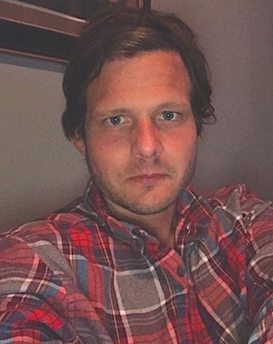

About Me
A little about myself...

BIO
I'm originally from the Minnetonka area where my family and I owned and operated a yacht club called Sailors World Marina and Boat Club. I eventually moved to Seattle, where I graduated from college and began traveling and teaching; I love diverse cultures,people I can learn new things from, and I have a passion for programming and designing cool stuff.